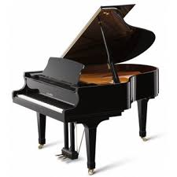

Pianoforte
Il pianoforte è uno strumento musicale a corde percosse mediante martelletti azionati da una tastiera. La tastiera è solitamente composta da 88 tasti, 52 di colore bianco e 36 di colore nero. I tasti bianchi rappresentano le note: do, re, mi, fa, sol, la e si. I tasti neri, invece, individuano le alterazioni (note bemolli o diesis). Il pianoforte è il più diffuso strumento appartenente ai cordofoni a corde percosse; altri membri sono il clavicordo, oggi utilizzato prevalentemente per l'esecuzione filologica della musica d'epoca, e il fortepiano, progenitore del pianoforte. L'origine della parola pianoforte è italiana ed è riferita alla possibilità che lo strumento offre di suonare note a volumi diversi in base al tocco, effetto non ottenibile negli strumenti a tastiera precedenti, quali il clavicembalo.[1] Anche mediante l'intervento sui pedali (solitamente tre), che azionano particolari meccanismi, il suono può essere modificato. In un moderno pianoforte a coda troviamo, da sinistra a destra, l'una corda, il tonale e quello di risonanza. Nei pianoforti verticali il pedale centrale aziona la sordina, che frappone una striscia di feltro fra le corde e i martelli per attutire il suono. Solo il primo e il terzo pedale sono presenti su tutti i pianoforti. Chi suona il pianoforte viene chiamato pianista.
Chitarra
Le tre corde più sottili sono in plastica; le tre più grosse sono di nylon rivestito di metallo, o talvolta di seta rivestita di metallo. In passato, le corde erano di budello di agnello. L'amplificazione è ottenuta per risonanza dal corpo vuoto a forma di otto (la cassa armonica), mentre la tavola superiore è responsabile dello spostamento d'aria. Il cavigliere (o paletta) è leggermente inclinato all'indietro. Secondo la posizione tradizionale usata per la musica classica, questo tipo di chitarra si suona da seduti, con le dita, poggiando lo strumento sulla gamba sinistra, leggermente rialzata tramite un apposito poggiapiede. Si possono anche trovare chitarre classiche a spalla mancante per facilitare lo spostamento nelle zone più alte della tastiera, e amplificate. Le chitarre flamenco sono molto simili per costruzione; hanno una protezione di plastica trasparente sopra e sotto la buca (detta golpero) per garantire l'integrità del sottile legno della tavola armonica dai colpi con le dita caratteristici di questo stile (vedi golpe e rasgueado).
Batteria
La batteria è uno strumento musicale composto da tamburi, piatti e altri strumenti a percussione disposti in modo tale che possano essere suonati da un solo musicista. I tamburi che compongono una batteria sono: la cassa (comandata generalmente dal piede destro), il rullante, due tom uno più acuto e un altro grave, e uno o più floor tom (chiamati "timpani", sebbene diversi dai timpani dell'orchestra sinfonica). I piatti che possono essere annessi a una batteria sono: ride, hi-hat detto anche charleston (il pedale apre e chiude i due piatti), crash, splash, china piatti a effetto . Esiste una vasta gamma di modelli di piatti ognuno disponibile in vari diametri, spessori, profili e forme per poter personalizzare il suono del musicista e della musica che si vuole eseguire.
Flauto
I flauti, detti anche aerofoni labiali o aerofoni a imboccatura naturale, sono una famiglia di strumenti musicali appartenenti al gruppo dei legni. A differenza di strumenti aerofoni simili come l'oboe o il clarinetto, i flauti non utilizzano un'ancia, ma un labium, ovvero un "fischietto", oppure un semplice foro su cui si soffia trasversalmente. L'attribuzione dei flauti alla famiglia dei legni deriva dal fatto che, fino al XIX secolo, la materia più utilizzata per la loro costruzione era appunto il legno. Oggi i flauti traversi sono normalmente costruiti in metallo, mentre in legno vengono tuttora prodotti i flauti dritti; ci sono poi flauti, specialmente globulari, costruiti in altri materiali, per esempio le ocarine in terracotta.